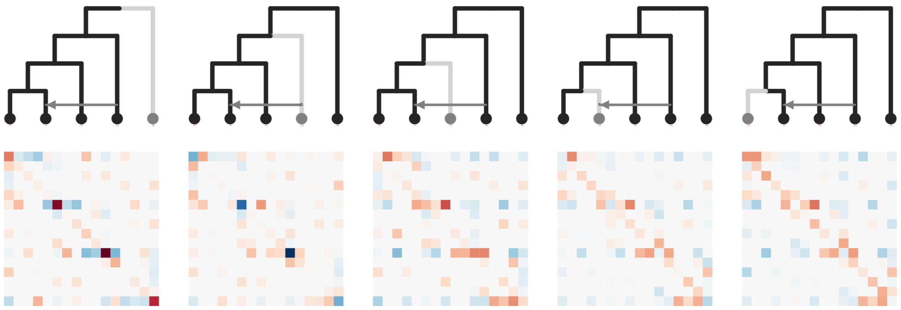
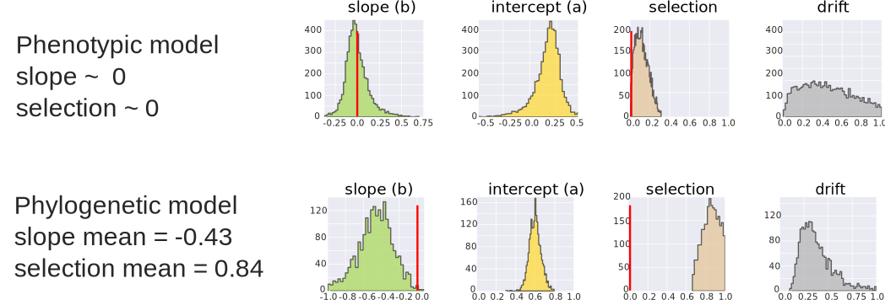

Plant Evolutionary Genomics Research
In the Eaton lab at Columbia University
Dept. of Ecology, Evolution, and Environmental Biology
Research Outline
1. Evolutionary history of plant diversification.
2. Software development for evolutionary genomics research.
3. Methods for inferring phylogenetic networks.
4. Modeling the evolutionary effects of species interactions.
5. Modeling the accumulation of speciation genes.
What is an Evolutionary Biologist?
Modern research in ecology and evolution requires a diverse skill set, from organismal biology, to genomics, statistics, and computational biology. My research and teaching centers on integrating these skills.


How can we most accurately reconstruct the
evolutionary history
of organisms from their genomes?
How can we use genomics to reconstruct historical
ecological interactions among species?
Genomics and Botany
And it's an exciting time for this! Genomic technologies are revolutionizing the study of ecology and evolution.

Genomics and Botany
And it's an exciting time for this! Genomic technologies are revolutionizing the study of ecology and evolution.

Genomics and Botany
And it's an exciting time for this! Genomic technologies are revolutionizing the study of ecology and evolution.
Genomics and Botany
And it's an exciting time for this! Genomic technologies are revolutionizing the study of ecology and evolution.

How can we most accurately reconstruct the
evolutionary history
of organisms from their genomes?
Inferring phylogeny from genome-scale data

The 'SVDquartets' framework
"invariants" are SNP patterns that occur equally (sensu word embedding).
Order SNP counts into 3 matrices for each quartet of samples.
One matrix contains more patterns matching the tree (e.g., AABB)
Two matrices contain patterns discordant with the tree (e.g., BABA, ABBA)
The matrix matching the tree aligns along rows/cols (invariants align).
SVD measures matrix filling (rank), and quickly finds best tree.


Shortcoming...
SVDquartets discards the other two subtrees which contain information relevant to inferring admixture, although we know the relative frequencies of these subtrees is informative about introgression (e.g., ABBA-BABA imbalance) (Durand et al. 2011)

In addition...
SVDquartets only examines individual quartets at a time Because quartets are not independent of each other, introgression of one may affect multiple other quartets (Eaton et al. 2012, 2015). Ideally, all taxa, or all quartets, would be examined simultaneously.
Joint inference of all quartet matrices for network inference
SVDquartets reduces SNP matrices to categorical results

SVDquartets reduces SNP matrices to categorical results

SVDquartets reduces SNP matrices to categorical results

SVDquartets reduces SNP matrices to categorical results
SVDquartets reduces SNP matrices to categorical results

Stacked count matrices
Unique fingerprint for different admixture scenarios

Simulate data and train ML model for each admixture scenario
ExtraTrees Classifier (sklearn) accurately identifies admixture edge and directionality with little training and requiring relatively little data (tens of thousands of SNPs).

Coding, reproducibility, software development
Efficient handling of large data sets, clear and reproducible coding skills, statistical literacy, understanding of data within a specialized field (e.g. genomics).
Coding, reproducibility, development

Python interactive coding exercises
Web-based environment for creating and sharing reproducible code. Our example explored tree-thinking and viewing trees as data using the toytree package in Python.
Tree thinking exercises
Reading trees involves interpreting the order in which lineages share common ancestors by tracing relationships backwards from the tips towards the root. Rotating nodes does not affect these relationships, even though the order of the tips changes. Which topology is different?
Trees as data
Phylogenetic trees are more than just pictures, they represent a data structure that can be interpreted and used in model-based analyses. Stored in Newick format.

Trees as data
Phylogenetic trees are more than just pictures, they represent a data structure that can be interpreted and used in model-based analyses. Stored in Newick format.

How can we use genomics to reconstruct historical
ecological interactions among species?
The Hengduan Mountains
The Hengduan Mountains
The Hengduan Mountains
The Hengduan Mountains
The Hengduan Mountains
The Hengduan Mountains
Floral diversity in Pedicularis


Pedicularis L. in China
Species rich:
>600 species worldwide, approximately 300 endemic to Hengduan.
We collected >60 species from 100 locations in 2018.
Morphologically diverse:
Spectacular floral diversity and abundant homoplasy;
similar forms have evolved repeatedly.
Complex history of assembly:
Mountain uplift over millions of years, glacial cycles over
thousands of years, river and mountains barriers, lead to
constantly shuffling communities (and species
interactions).
Plant collecting (flower hunting) in the Hengduan Mountains
Plant collecting (flower hunting) in the Hengduan Mountains
Plant collecting (flower hunting) in the Hengduan Mountains
Plant collecting (flower hunting) in the Hengduan Mountains
Plant collecting (flower hunting) in the Hengduan Mountains
Plant collecting (flower hunting) in the Hengduan Mountains
Plant collecting (flower hunting) in the Hengduan Mountains
Reproductive interference
Negative fitness consequences imposed by one organism on another by disrupting successful reproduction (a form of selection on reproductive traits/timing/behavior)
Does interspecific competition/interference drive floral divergence?
Is floral divergence associated with genetic divergence/speciation?
Morphological terminology

The beak of the galea directs pollen placement and pickup

Elongate styles
Elongate styles have evolved multiple times (Ree 2005) and facilitate pollen competition among species (Tong and Huang 2016).


Reproductive character displacement
Hypothesis: Differences among populations (within species) are a result of interspecific interactions driving character displacement in local communities.

Case study: Pedicularis cranolopha

Case study: Pedicularis cranolopha

P. cranolopha
P. longiflora
P. rhinanthoides
P. fetisowii
Testing association between phenotype and (biotic) environment

P. cranolopha RAD-seq genomics
110 individuals across 15 targeted locations.
RAD-seq (original) PstI enzyme, Floragenex Inc.
5.5M reads per sample; ipyrad min50 denovo assembly
20K loci, 21% missing, 286K SNPs
Testing association between phenotype and (biotic) environment
Lande (1976):
Selection pulls
the mean phenotype towards a local optimum, while
Gene Flow homogenizes phenotypes among populations,
and they evolve by stochastic
Drift.


A community phylogenetic test for character displacement
P. cranolopha has a longer style when co-occurring with closer relatives; supports gametophytic "arms-race" hypothesis.
Thank you
Tree thinking notebook
Simulation notebook